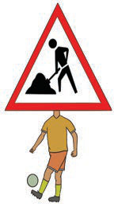
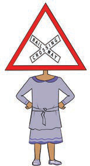

Mimi ni taa nyekundu, ninapowaka ninazuia watu, magari, pikipiki na baiskeli kupita.

Mimi ni daraja jembamba, chukua tahadhari unaponitumia kupita.

Mimi ni alama ya kazi inayoendelea, ukiniona chukua tahadhari wakati wa kupita.
Mimi ni kituo cha basi, nitumie kupanda na kushuka kwenye basi.

Mimi ni taa ya njano, ninapowaka jiandae kuvuka au kusimama.

Mimi ni alama ya reli inayokatisha, ukiniona chukua tahadhari kabla ya kuvuka.

Mimi ni njia ya waendesha baiskeli, nitumie ukiwa unaendesha baiskeli.